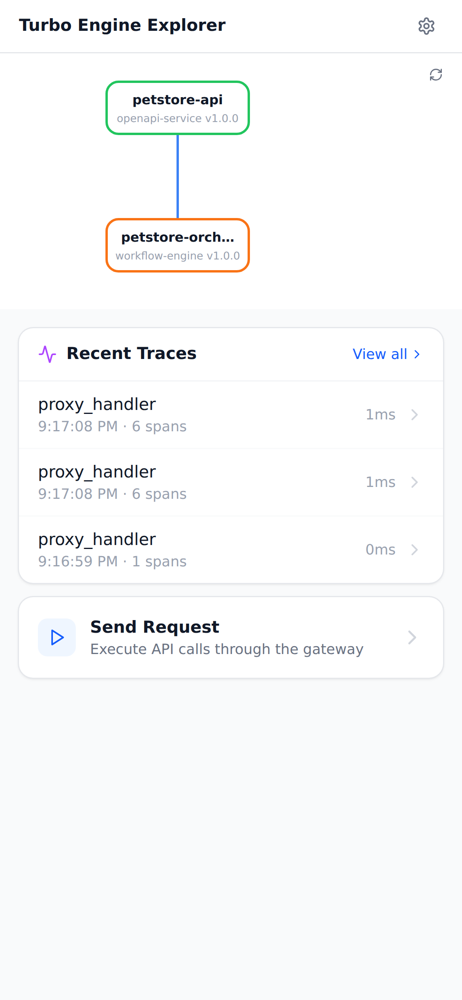

ALL 14 TESTS PASSED — petstore-basic
Petstore API with RPC-to-REST orchestrator. Validates the full request chain: gateway → orchestrator → upstream API, including trace propagation.
Test Results
| Test | Result | Detail | Time |
|---|---|---|---|
| publish-petstore-api | PASS | Published petstore-api@1.0.0 (HTTP 201) | 27ms |
| publish-petstore-orchestrator | PASS | Published petstore-orchestrator@1.0.0 (HTTP 201) | 2ms |
| create-environment | PASS | Created 649d24a5c1cb164e8090fbe0f664ed49 | 3ms |
| trigger-build | PASS | Build bld-1771708613966-1 triggered | 2ms |
| build-status | PASS | Build bld-1771708613966-1 succeeded | 2ms |
| operator-reconcile | PASS | Reconciled 2 components | 51ms |
| verify-k8s-resources | PASS | All 6 resources created | 265ms |
| pods-running | PASS | All pods running | 292ms |
| gateway-routing | PASS | Gateway route /api/pets/rpc/listPets active (HTTP 200) | 5011ms |
| list-pets-direct | PASS | HTTP 200; pets has 3 items (>= 1) | 2004ms |
| orchestrator-direct | PASS | HTTP 200; rpc=listPets; upstream_status=200 | 2006ms |
| e2e-list-pets | PASS | HTTP 200; rpc=listPets; upstream_status=200; result.pets has 3 items (>= 1) | 3ms |
| e2e-get-pet | PASS | HTTP 200; result.pet.name=Whiskers | 3ms |
| trace-propagation | PASS | HTTP 200; trace_id=a0b1c2d3e4f5a6b7c8d9e0f1a2b3c4d5 | 3ms |
Screenshots
Console packages list after publishing petstore components

Environments list showing the petstore-e2e environment

Console dashboard overview

Explorer mobile UI showing deployed services and traces
Component Logs
petstore-api (13 lines)
21:16:54.497 INFO petstore mock starting
21:17:04.587 INFO request received
21:17:04.587 INFO response sent
21:17:06.592 INFO request received
21:17:06.592 INFO response sent
21:17:08.597 INFO request received
21:17:08.597 INFO response sent
21:17:08.600 INFO request received
21:17:08.600 INFO response sent
21:17:08.604 INFO request received
21:17:08.604 INFO response sent
21:17:08.607 INFO request received
21:17:08.607 INFO response sent
petstore-orchestrator (21 lines)
21:16:54.531 INFO orchestrator starting
21:17:04.585 INFO request received
21:17:04.585 INFO upstream call start
21:17:04.587 INFO upstream call complete
21:17:04.587 INFO response sent
21:17:08.597 INFO request received
21:17:08.597 INFO upstream call start
21:17:08.597 INFO upstream call complete
21:17:08.597 INFO response sent
21:17:08.600 INFO request received
21:17:08.600 INFO upstream call start
21:17:08.601 INFO upstream call complete
21:17:08.601 INFO response sent
21:17:08.603 INFO request received
21:17:08.603 INFO upstream call start
21:17:08.604 INFO upstream call complete
21:17:08.604 INFO response sent
21:17:08.607 INFO request received
21:17:08.607 INFO upstream call start
21:17:08.607 INFO upstream call complete
21:17:08.607 INFO response sent